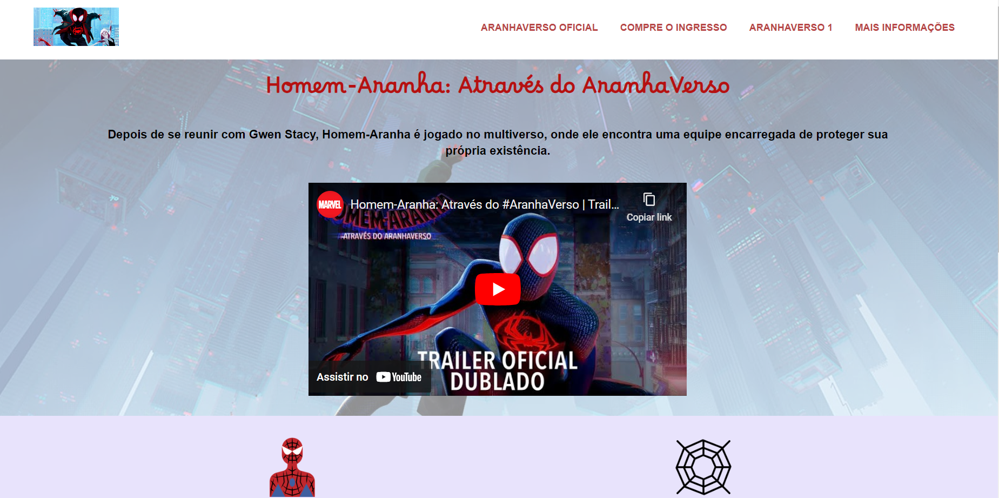

O QUE O ELAS NA TECH REPRESENTA PARA VOCÊ?
A tecnologia é uma área que desafia os profissionais a cada dia que passa, fazendo com que muitos e, inclusive eu, tenha dúvidas de continuar a persistir ou desistir, mas o Elas na Tech chegou para representar recomeço e esperança com os aprendizados e desafios, me possibilitando de acreditar mais no meu processo cada vez que avançava mais uma etapa do programa.
Elas na Tech
QUEM É VOCÊ?
Meu nome é Stefhany, tenho 20 anos e sou da zona oeste de São Paulo. Atualmente formada em Marketing Digital, decidi fazer transição de carreira para a área da tecnologia e conquistei uma bolsa integral para estar cursando Análise e Desenvolvimento de Sistemas. Meus hobbies são ouvir música, tecnologia, assistir séries e sou uma pessoa que continuamente gosta de conquistar o máximo de conhecimentos possíveis.
COMO TUDO COMEÇOU
Minha jornada no Elas na Tech se iniciou quando avistei um anúncio de uma pessoa divulgando em uma rede social sobre o programa, possibilitando de eu me interessar e se inscrever. Como eu constantemente sou uma pessoa entusiasta em fazer vários cursos variavéis, inclusive os de tecnologia, decidi tentar uma oportunidade de conseguir mais aprendizado no Elas na Tech.
QUAIS DESAFIOS FORAM SUPERADOS?
Os maiores desafios superados foram as tentações psicológicas para não desistir de todo meu processo no Elas na Tech e principalmente da área da tecnologia nesse período de aprendizado e constância nos meus estudos. Muitas das vezes eu pensei em desistir por achar que a área não era algo feito para meu futuro e, muitas das vezes acreditei que não poderia conseguir desenvolver projetos incríveis, mas o Elas na Tech me provou que eu posso continuar vencendo os obstáculos e dificuldades da área da tecnologia para me tornar uma futura profissional ainda mais dedicada.
QUAIS FORAM SUAS CONQUISTAS ATÉ AQUI?
Uma das maiores conquistas foram o Elas na Tech possibilitar de eu acreditar ainda mais no meu potencial para desenvolver sites, sendo algo que eu não acreditava. Já, outra conquista foi conseguir ter um contato com minhas colegas que também contribuiram para meu processo inicial e inspiração para continuar.
QUAIS FORAM MEUS APRENDIZADOS?
Aprendizados iniciais:
Noções Básicas da Internet;
Noções Básicas da Programação;
Aprendizados avançados:
Visual Studio Code;
Git e GitHub;
Fundamentos Web Frontend: HTML, CSS e JavaScript;
Bootstrap 5;
Programação com Python;
ChatGPT para Python;
PROJETOS DESENVOLVIDOS EM AULA
DESAFIO INICIANDO EM HTML E CSS
Este primeiro desafio proposto pelo Elas na Tech teve como objetivo em apresentar os conteúdos apresentados na aula 06, como por exemplo: margin, border, padding entre outros.
Tecnologias usadas: HTML e CSS.
Repositório no GitHub GitHub PageDESAFIO PÁGINA GREEN POR BLOCOS DE SEPARAÇÃO
Este segundo desafio proposto pelo Elas na Tech teve como objetivo em apresentar os conteúdos apresentados na aula 07, como por exemplo: tags semânticas, section, article e estililização pelo CSS.
Tecnologias usadas: HTML e CSS.
Repositório no GitHub GitHub PageDESAFIO GALERIA DE FOTOS PURPLE
Este terceiro desafio proposto pelo Elas na Tech teve como objetivo em apresentar os conteúdos apresentados na aula 08, como por exemplo: aplicar elementos flexbox no CSS para estilizar uma página.
Tecnologias usadas: HTML e CSS.
Repositório no GitHub GitHub PageDESAFIO RESPONSIVIDADE
Este quarto desafio proposto pelo Elas na Tech teve como objetivo em apresentar os conteúdos apresentados na aula 09, como por exemplo: media queries para adaptar a página em diferentes dispositivos.
Tecnologias usadas: HTML e CSS.
Repositório no GitHub GitHub PageDESAFIO HOMEM-ARANHA NOS CINEMAS
Este quinto desafio proposto pelo Elas na Tech teve como objetivo em apresentar os conteúdos ensinados na aula 10, como por exemplo: responsividade para dispositivos movéis e colocar vídeo do Youtube.
Tecnologias usadas: HTML e CSS.
Repositório no GitHub GitHub PageDESAFIO JAVASCRIPT
Este sexto desafio proposto pelo Elas na Tech teve como objetivo em apresentar os conteúdos da na aula 11: conceitos iniciais da linguagem de programação Javascript e desenvolvemos um programa que atende aos critérios específicos para aparecer a mensagem na tela.
Tecnologias usadas: HTML, CSS e JS.
Repositório no GitHub GitHub PageDESAFIO CALCULADORA DIGITAL
Este sétimo desafio proposto pelo Elas na Tech teve como objetivo em apresentar os conteúdos da na aula 12: DOM (Modelo de Objetos para Documento) e criamos uma calculadora digital que reseta o resultado assim que é clicado no botão de limpar.
Tecnologias usadas: HTML, CSS e JS.
Repositório no GitHub GitHub PageDESAFIO PÁGINA DO CRASH
Este oitavo desafio proposto pelo Elas na Tech teve como objetivo em apresentar os conteúdos apresentados na aula 13: desenvolver e utilizar o menu hamburguer nas páginas com responsividade para mobile.
Tecnologias usadas: HTML e CSS.
Repositório no GitHub GitHub PageDESAFIO GALERIA COM CARROSSEL DE FOTOS
Este nono e último desafio proposto pelo Elas na Tech teve como objetivo em apresentar os conteúdos da na aula 14, onde foi ensinado conceitos iniciais do Bootstrap 5 e desenvolvemos um carrossel de fotos com o Bootstrap.
Tecnologias usadas: HTML, CSS e JS.
Repositório no GitHub GitHub PageMINHAS EXPERIÊNCIAS COM O ELAS NA TECH
As minhas experiências com o Elas na Tech foram muito positivas, apesar de toda insegurança que vivenciei enfrentando os novos desafios, foi uma fonte de muito conhecimento e sabedoria para eu continuar minha jornada na tecnologia.